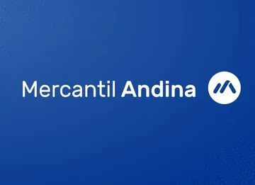

¿Cómo actuar ante un siniestro?
Si sufriste un accidente, un robo o un daño, estamos para ayudarte. Seguí estos pasos y avisanos lo antes posible.
Si hay heridos o peligro, llamá primero a emergencias
Paso a paso
Qué hacer ante un siniestro
Ponete a salvo
Si hay personas lesionadas o riesgo, llamá a emergencias. Si podés hacerlo sin peligro, señalizá el lugar.
Registrá lo que pasó
Sacá fotos de los vehículos en la posición en que quedaron y de los daños. Pedí los datos del otro conductor y de testigos.
Avisanos
Escribinos por WhatsApp. Te indicamos cómo seguir y te ayudamos con la denuncia administrativa ante la compañía.
Avisar a mi asesorHacé las denuncias
La Ley de Seguros (17.418) fija un plazo de 3 días desde que conocés el siniestro para comunicarlo a la aseguradora. En robos, incendios o si hay lesionados, hacé también la denuncia policial.
Carga los datos de tu denuncia
Tené a mano
- Tu póliza o número de póliza y el último recibo de pago.
- DNI, registro de conducir y cédula del vehículo.
- Datos del tercero: nombre, DNI, registro, domicilio y teléfono.
- Datos de su vehículo (marca, modelo, patente) y de su aseguradora y póliza.
- Fotos de los daños y del lugar.
- Datos de testigos, si los hay.
- Constancia de la denuncia policial (robo, incendio o lesionados).
- En hogar o comercio: facturas o comprobantes de los bienes afectados.
Asistencia
Teléfonos útiles por compañía
Tocá un número para llamar directamente desde tu celular.
-

Zurich
- Asistencia:
0800 222 1600 - SMS al 70703 con la palabra SOS y el dominio del vehículo:
Enviar SMS - Desde el exterior:
+54 351 485-8321
- Asistencia:
-
La Segunda
- Asistencia:
0800-888-0001 · 0800-888-8003 · 0800-888-8004 - Nacional:
011 5300-8029 · 011 4331-3550 - Desde el exterior:
+54 11 5300-8029 - Accidentes personales:
0800-444-2782
- Asistencia:
-

Federación Patronal
- Asistencia autos:
0800-222-0022 · 0800-800-0022 - SMS al 70703 con el texto SOS y la patente (ej.: SOS KMT055):
Enviar SMS - Desde países limítrofes:
+54 351 4858-321 · +54 11 4129-8100 - WhatsApp:
+54 9 11 2808-0012 · +54 9 351 200-2585 - Accidentes personales (AP Prestacional):
0800-222-3123
- Asistencia autos:
-

San Cristóbal
- Asistencia 24 h:
0810-222-8887 · 0810-444-0100 - WhatsApp:
+54 11 2598-5281
- Asistencia 24 h:
-
Sancor Seguros
- Asistencia:
011 5300-8073 - WhatsApp:
+54 9 3493 51-0404 - Emergencias médicas:
0800 555 2850
- Asistencia:
-
Galicia Seguros
- AuxiMóvil:
0800-444-3939 - Desde países limítrofes:
+54 11 4114-8318 - Asistencia general y hogar:
0800-555-2272
- AuxiMóvil:
-

Mercantil Andina
- Asistencia:
0800-777-2634 · (011) 4335-5792
- Asistencia:
Los teléfonos de asistencia los define cada compañía y pueden cambiar. Ante cualquier duda, verificá en tu póliza, en el sitio oficial de la aseguradora o consultanos.
Guías por tipo de seguro
Documentación y pasos según el siniestro
Información general orientativa. Las instrucciones de tu compañía y tu póliza siempre tienen prioridad.
Automotores
Si no hay personas lesionadas
- Fotografías: obtené fotos de los vehículos en la posición en que quedaron después del impacto y de los daños de cada uno.
- Datos del/los tercero/s: del conductor y del propietario (nombre y apellido, DNI, número de registro de conducir, domicilio y teléfono); del vehículo (marca, modelo y patente); de la aseguradora (nombre y número de póliza).
- Denuncia administrativa: para su redacción, firma y presentación ante la compañía, contactate con tu Productor Asesor de Seguros o con la agencia más cercana. Necesitás el registro de conducir de quien manejaba, la póliza o su número y el último recibo de pago.
- Importante: tratá de identificar testigos (nombre, DNI, domicilio y teléfono). Concurrí a la brevedad a la comisaría de la jurisdicción del accidente para hacer la exposición policial, con tu documento, la documentación del vehículo, los datos de la póliza y los del/los tercero/s.
Si hay personas lesionadas
- Intervención policial: debe intervenir la autoridad policial de la jurisdicción del accidente, que se encarga de la inspección del lugar, fotos y testigos. Colaborá en lo posible, especialmente con fotos y testigos.
- Denuncia administrativa: contactate con tu Productor Asesor de Seguros o con la compañía, con el registro de conducir de quien manejaba, la póliza o su número y el último recibo de pago.
- Importante: para recibir instrucciones desde el lugar o en la primera oportunidad posible, comunicate con tu productor asesor o con la compañía (los datos figuran en tu póliza).
Robo total o parcial del vehículo
- Denuncia policial: hacela de inmediato en la comisaría de la jurisdicción del hecho y pedí constancia escrita.
- Denuncia administrativa: contactate con tu Productor Asesor de Seguros o con la compañía, con el registro de conducir, la póliza o su número y el último recibo de pago.
- Documentación: luego de la denuncia administrativa, la compañía te indicará qué presentar para la indemnización.
Incendio total o parcial del vehículo
- Denuncia policial: hacela de inmediato y pedí constancia escrita.
- Denuncia administrativa: con tu Productor Asesor de Seguros o la compañía, con el registro de conducir, la póliza o su número y el último recibo de pago.
- Informe de bomberos: si intervinieron, presentá la constancia de su actuación.
- Documentación: la compañía te indicará qué presentar luego de la denuncia administrativa.
Si recibís una demanda judicial o un reclamo
- Avisá de inmediato (dentro de las 24 horas de recibida) a tu Productor Asesor de Seguros o a la compañía.
- En el mismo plazo, entregá o remití la cédula (o la intimación, si el reclamo es extrajudicial), las copias y los documentos recibidos. La compañía te informará qué abogado/s actuarán en tu defensa, a quien deberás otorgar el poder antes del vencimiento del plazo para contestar.
Accidentes personales y ART
Tenés que proveer de manera completa la siguiente información:
- Denuncia administrativa: contactate con tu Productor Asesor de Seguros o con la compañía, con la póliza o su número y el último recibo de pago. Debe denunciarse dentro de las 72 horas.
- Antecedentes médicos: si el accidente provocó lesiones, remití todos los antecedentes médicos para que la asesoría médica de la compañía pueda verificarlas.
- Certificado de defunción: si el accidente provocó la muerte del asegurado, junto con el certificado se presenta constancia de relación laboral, ficha de beneficiarios y recibo de sueldo (si tenía relación de dependencia).
- En los casos necesarios, la compañía solicitará información complementaria. Ante cualquier duda, consultá con tu asesor o con la compañía.
Hogar
Contactate con tu Productor Asesor de Seguros o con la sucursal más cercana de la compañía y presentá la información según el tipo de siniestro:
Rotura de cristales
- Denuncia ante la compañía o tu Productor Asesor de Seguros.
- Factura de reposición de los cristales.
- Fotos.
Robo de mobiliario general
- Denuncia ante la compañía o tu Productor Asesor de Seguros.
- Exposición policial.
- Factura o comprobante de reparación de los bienes dañados durante el robo (cerraduras, puertas, ventanas, etc.).
- Comprobante de preexistencia de cada bien sustraído: preferentemente factura de compra; si no, manuales, certificados de garantía, parte de la caja o cualquier comprobante que demuestre que existía antes del siniestro.
Incendio
- Denuncia ante la compañía o tu Productor Asesor de Seguros.
- Exposición policial y certificado de actuación de bomberos.
- Fotos del siniestro.
- Comprobante de preexistencia de cada bien afectado (factura, manual, garantía u otro comprobante).
Daño sobre bienes específicos detallados en la póliza
- Denuncia ante la compañía o tu Productor Asesor de Seguros.
- Informe técnico con el modelo del bien, los daños y su probable causa.
- Presupuesto de reparación.
Comercio
Contactate con tu Productor Asesor de Seguros o con la sucursal más cercana de la compañía y presentá la información según el tipo de siniestro:
Robo de bienes de uso y mercaderías
- Formulario de denuncia firmado por el asegurado.
- Exposición policial.
- Factura o comprobante de reparación de los bienes dañados durante el robo (cerraduras, puertas, ventanas, etc.).
- Comprobante de preexistencia de cada bien sustraído (factura, manual, garantía u otro comprobante).
Daños por caída de rayo
- Formulario de denuncia firmado por el asegurado.
- Informe técnico con el modelo del bien, los daños y su probable causa.
- Presupuesto de reparación.
Incendio
- Formulario de denuncia firmado por el asegurado.
- Exposición policial y certificado de actuación de bomberos.
- Fotos del siniestro.
- Copia del plano del inmueble siniestrado.
- Detalle de los bienes afectados.
- Comprobante de preexistencia de cada bien afectado.
Daños por granizo
- Formulario de denuncia firmado por el asegurado.
- Copia del plano del inmueble siniestrado.
- Fotos del siniestro.
- Detalle de los bienes afectados.
- Presupuesto de reparación.
¿Tenés dudas sobre tu siniestro?
Consultanos antes de presentar la documentación. Te ayudamos a hacerlo bien desde el principio.